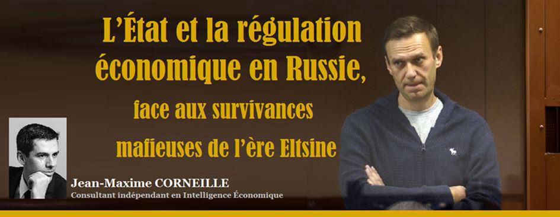
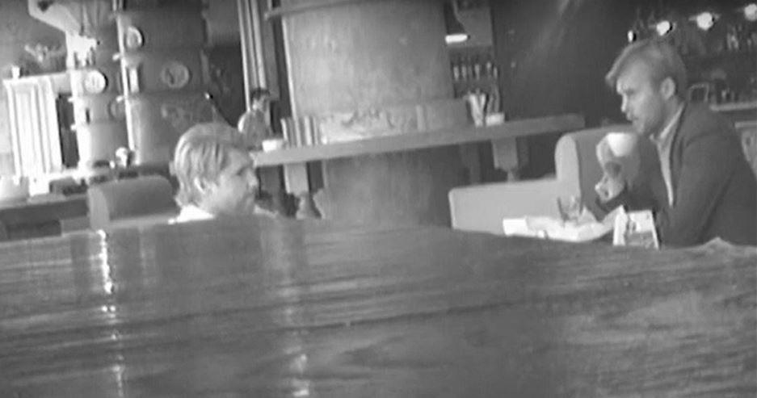
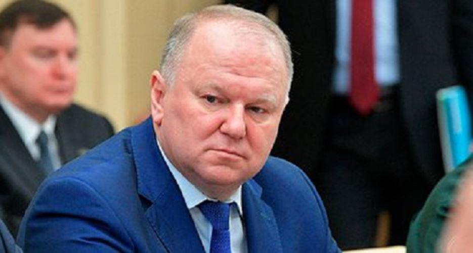
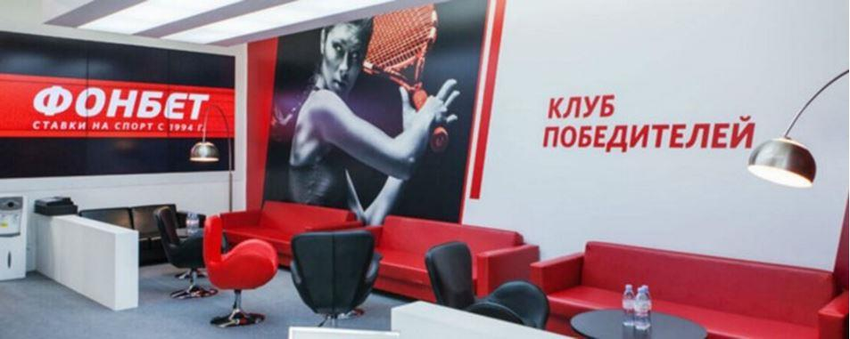
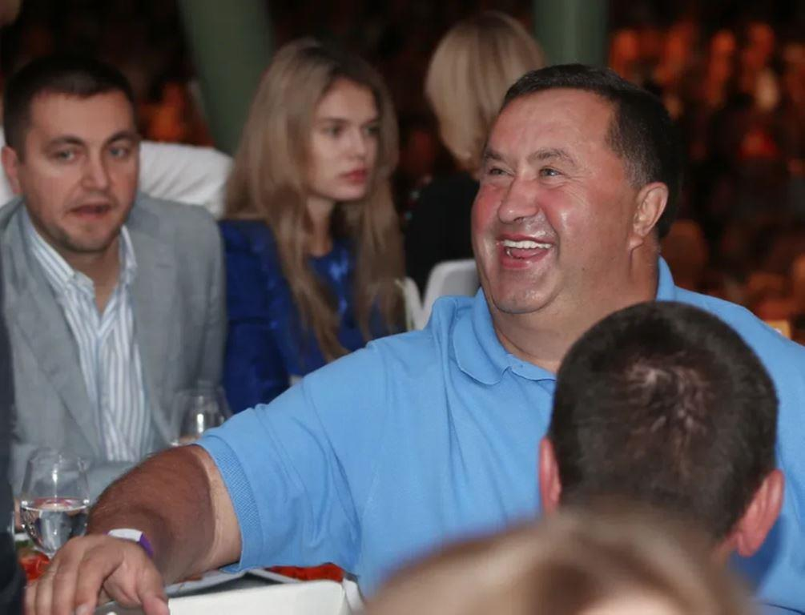
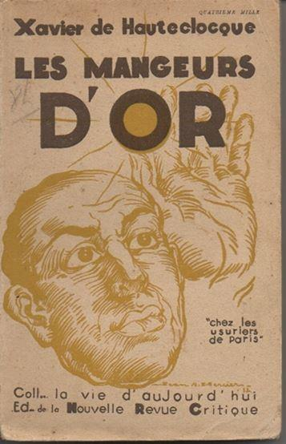
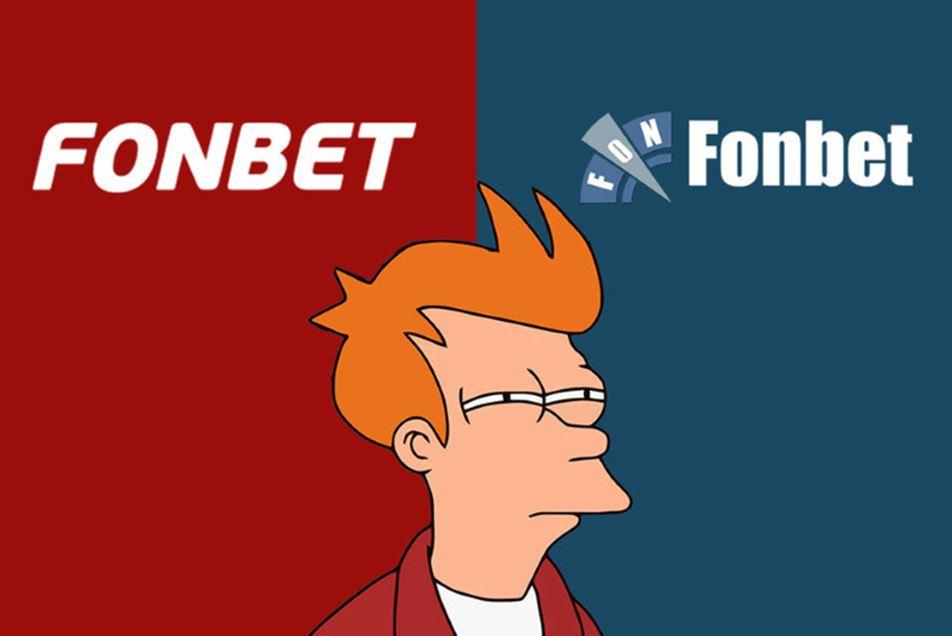

L’État et la régulation économique en Russie, face aux survivances mafieuses de l’ère Eltsine
par Jean-Maxime CORNEILLE

Déstabilisations financières multiformes contre la Russie derrière l’affaire Navalny
Les récentes péripéties de l’affaire Navalny, depuis le début de l’année 2020, illustrent la façon dont les opérations de déstabilisations financières contre la Russie sont pensées sur le temps long.
Les révélations, à l’initiative vraisemblable du Renseignement russe, d’une vidéo compromettante ayant mis en évidence les liens entre l’activisme anti-russe de Navalny et les intérêts britanniques,1 ont logiquement eu pour réponse les dénégations britanniques officielles. Navalny y demandait par l’intermédiaire de son lieutenant Achourkov (en 2012), de se faire corrompre par les Britanniques afin de dénoncer la « corruption » du gouvernement russe, et l’on peut comprendre la prudence des Britanniques dans un contexte de resserrement de la législation russe à l’encontre des agents de l’étranger …
Cependant, cette affaire Navalny incluait une opération sophistiquée de déstabilisation financière contre la banque russe VTB qui a été trop peu commentée. En collaboration avec la « Société Henry Jackson » (Henry Jackson Society, HJS), un « Think Tank sur la sécurité nationale et les politiques étrangères transatlantiques » basé à Londres, le groupe de Navalny préparait en effet un rapport sur la banque russe VTB, qui visait à la discréditer sur les marchés financiers européens : en attaquant sa gestion des risques considérée comme « déficiente », en la présentant comme « corrompue », ce qui rejoignait les intérêts des banques britanniques auxquelles la VTB faisait concurrence.
Dans cette vidéo compromettante de 2012, le Britannique n’admettait donc pas directement la coopération du Royaume-Uni avec Navalny contre la Russie. Mais il confirmait bien l’existence d’une « sous-traitance » de la déstabilisation étrangère (notamment britannique) contre la Russie : tout d’abord, par les O.N.G., avec l’action de Transparency International, mais aussi par la promotion d’un « gouvernement d’ouverture » en Russie, un thème qui rappelle celui de la « société ouverte » de George Soros, un autre type de promotion par des O.N.G., « neutres » en apparence…
Mais surtout, avec la Henry Jackson Society, c’était un autre type de sous-traitance de la déstabilisation de la Russie qui fut révélé par l’affaire Navalny : celle passant par les Think Tank et autres « respectables » cabinet d’affaires londoniens, en apparence non reliés directement au Gouvernement britannique mais qui agissaient pour faire passer sans cesse la Russie pour une gigantesque kleptocratie dictatoriale du tiers-monde.2
Cette opération contre la banque russe VTB, dont on sait qu’elle est un opérateur majeur pour le commerce international de la Russie, y compris en matière d’armement, illustre combien la diplomatie britannique est, depuis plusieurs siècles, avant tout celle des puissants intérêts financiers de la City, épaulée par un Complexe Militaro-Industriel aujourd’hui plus discret que du temps de l’Empire britannique3. Par le passé, la Révolution française comme la Révolution russe avaient été toutes deux précédées par ce même type d’activisme en sous-main, provenant de puissants opérateurs financiers de la City (et plus tard aussi de Wall Street contre la Russie), incluant de nombreuses intrigues politico-financières…4 La vidéo de 2012 permettait donc d’entrevoir une actualisation de cette même subversion financière puissante.
Derrière l’affaire Navalny, transparaissait donc un modus operandi des déstabilisations contre la Russie, passant par les cabinets et autres officines londoniennes : toutes les déstabilisations contre la Russie sont bonnes à prendre… Le but stratégique est sans cesse d’attenter à la crédibilité de l’État russe et à ses capacités de régulation économique. Cette situation est d’autant plus révoltante, que ces mêmes opérateurs financiers britanniques sont bien souvent les mêmes qui bénéficiaient de la jungle économique des années 1990 en Russie, lorsque l’État russe n’était plus en mesure de contrôler les abus et la criminalité économique sur son sol.5 Il n’est pas difficile d’envisager qu’ils en bénéficierait de nouveau, si l’État russe devenait de nouveau « défaillant »…6
Une nouvelle affaire du même type se dévoile en ce moment, dont les ramifications illustrent à quel point la mondialisation est conçue pour vider les Etats de leurs capacités de régulation économique, en faisant pour cela alliance avec les mafias et autres opérateurs financiers indélicats.7 C’est l’affaire Fonbet, avec notamment l’implication du financier Alexandre Bourtakov.
Reconversion forcée des anciens criminels économiques de l’ère Eltsine dans le pari en ligne
Homme d'affaires anciennement russe, aujourd'hui israélien, résidant à Monaco, Alexandre Bourtakov fait partie de ces financiers « indélicats » qui ont largement profité de la jungle économique et du dépeçage de la Russie durant les années 1990. Logiquement, il choisit l'exil lors de la restauration de la légalité par Evgueni Primakov puis Vladimir Poutine, lorsque la lutte contre cette criminalité économique devint par nécessité impérieuse, la priorité de l'État russe.
La « reconversion » d'Alexandre Bourtakov dans les paris en ligne, qui émerge aux yeux du grand public à travers l'actuelle affaire Fonbet, illustre cependant son tropisme persistant vers les affaires de gains financiers faciles au détriment de l'État russe.
Les « affaires » d'Alexandre Bourtakov s'inscrivent aussi dans le contexte de la libéralisation des paris sportifs et du jeu en ligne, prôné à la même époque par l'Union Européenne à partir des années 2000, pour le plus grand bénéfice d'opérateurs privés fort peu soucieux de l'intérêt général. En lieu et place des anciennes structures publiques de jeux populaires, le marché a été ouvert en grand à la libéralisation tous azimuts d'un secteur que l'on sait pourtant propice aux malversations et aux abus : de nombreuses transactions détaxées permettent en effet de camoufler un certain nombre de pratiques, et notamment le blanchiment financier pour tout type de mafias.
Il est révélateur qu'à la même époque où l'Union Européenne encourageait cette dérégulation sous prétexte de « libéralisation », tout en fermant les yeux sur ces risques pourtant connus, la Russie l'ait considérablement restreinte sur son sol. Sans doute est-ce parce que la Russie était le pays d'Europe qui avait enduré les pires abus financiers durant les années 1990.
Ces possibilités de transactions abritées par les plates-formes de paris en ligne, permettent en effet un certain nombre de paris illégaux en parallèle, dont la fiscalité échappe en partie à l'État, et constitue autant de possibilités d'enrichissement anormales pour des opérateurs privés plus ou moins mafieux. En marge des plates-formes de paris en ligne qui sont connues du grand public et populaires, des existent des plates-formes aux marges de la légalité voire illégales, susceptibles d’abriter des transactions illégales non taxées. L’opérateur Fonbet est lourdement suspecté d’utiliser de telles tactiques7, camouflées par une multiplication des sociétés-écrans dans des paradis fiscaux. C’est un business florissant, dont le contrôle est rendu difficile par la facilité de multiplier les sites miroirs sur Internet, plus vite que les autorités ne parviennent à les fermer…
Affaire Fonbet : l'héritage persistant des pratiques mafieuses des années 1990
Fonbet (depuis son site fonbet.ru), est en fait la marque en Russie de la société de paris en ligne « F.O.N LLC », fondée en 19947 par le joueur d'échecs soviétique Anatoly Machulsky (décédé en 20178). Fonbet n'est devenu profitable qu’à partir du 1er juillet 2009, date de l'interdiction des casinos et salles de jeu sur l’ensemble du territoire de la Fédération de Russie9. Cet effet de vases communicants attira l'attention des autorités russes, tant et si bien qu'en 2013, des perquisitions furent effectuées dans les locaux de Fonbet dans le cadre d'une enquête pénale relative à une organisation illégale de jeux d'argent.
La Justice russe instruit l'affaire en 2013, puis le 20 février 2014, elle ouvre une procédure pénale contre Fonbet pour « Organisation et conduite illégales de jeux de hasard avec extraction de revenus à une échelle particulièrement importante10 », en vertu de la partie 2 de l'art. 171.2 du Code pénal de la Fédération de Russie.
Entretemps, plusieurs modifications de capital et changements de propriétaires de Fonbet ont lieu, très vraisemblablement pour camoufler les responsabilités par des structures de société imbriquées les unes dans les autres, et abritées dans des paradis fiscaux. Les actionnaires de Fonbet ne sont pas clairement identifiés, mais leur activité relève davantage de la maximisation de leurs profits, tentant d'échapper au système de taxation finançant le sport en Russie, avec des soupçons de transactions occultes camouflées dans le volume des opérations.
Plusieurs personnages importants se démarquent cependant dans cette affaire. Notamment Alexandre Bourtakov, qui était actionnaire en Russie, d’une société "FLINT KSI", engagée dans "des activités d'organisation et de conduite de jeux et paris" dotée d’un capital autorisé de 715 millions de roubles10. Son épouse Irina Borodina est une des principales actionnaires de Fonbet (FON LLC), leader du jeu en ligne en Russie. Bien qu’Alexander Bourtakov n'apparaisse pas officiellement au sein de la société Fonbet, il a un rôle important dans la gestion de l'entreprise8. A Chypre, Alexandre Bourtakov est copropriétaire de Leonum Limited, par l’intermédiaire de la société Kaplan10, société dont il semble avoir été à l'origine. Leonum Limited est la société de contrôle des activités à l’étranger du site de paris en ligne Fonbet11. Elle est soupçonnée de gérer les sites internet illégaux de Fonbet et de blanchiment d’argent en faveur de Fonbet12. Leonum Limited est une holding (portefeuille d'action), actionnaire d’une dizaine d’entreprises filiales au total. Son rapport financier de 2014, affiche plus de 60 millions d'euros de chiffre d'affaires13, constitué quasiment exclusivement de dividendes provenant de ces filiales14.
Structures occultes, imbrication complexe de sociétés-écrans et paradis fiscaux
En 2017, Birusa Limited, société chypriote (liée à Leonum Limited), devient copropriétaire avec 65% du capital autorisé de Fonbet, aux côtés de Sergei Tetruashvili, Stanislav Magomedov15 (déjà actionnaire de TM & IMPCO en Angleterre) et Irina Borodina (l'épouse d'Alexandre Bourtakov). Tous les copropriétaires ont des intérêts commerciaux variés mais « convergents », pour le dire pudiquement.
 Sergei Lalakin. Photo : RIA Novosti
Magomedov s'était déjà signalé depuis les années 1990 : ancien député à la Douma d'État (Parti libéral démocrate, 1995-1999), il fait des affaires avec le fils de l’homme d'affaires Sergei Lalakin de Podolsk (ville de l’oblast de Moscou), ayant des intérêts dans l’hôtellerie et les saunas de luxe dans un contexte suspect, en ne déclarant des bénéfices que durant l’exercice 2016, et des pertes conséquentes en 2018.
Lalakin Sr. est un personnage public suspecté d’une certaine proximité avec le crime organisé de Podolsk. Un certain nombre d'enquêtes menées par des journalistes d'investigation, certainement appuyés par les services officiels, ont pu conclure à son association occulte avec la « mafia russe», considérant même que Sergei Lalakin, surnommé «Luchok», dirigeait le « groupe Podolsk 10» durant les années 1990. Des pratiques diverses de chantage mafieux, affairisme usuraire et extorsion de fonds émaillent ce parcours16. De par ses activités professionnelles, Alexandre Bourtakov est lié à son fils, Maxime Lalakin12.
Nombre d'enquêtes journalistiques sérieuses et de fuites certainement organisées depuis l'institution judiciaire tendent à considérer que Bourtakov est un fraudeur fiscal, dont l'activité principale consiste à trouver des personnes dans le besoin dont il exploite les faiblesses à des fins usuraires. Xavier de Hauteclocque, agent du Renseignement français cousin du Maréchal Leclerc, avait documenté des pratiques exactement similaires en France durant les années 1930 dans Les Mangeurs d’Or (1932). C’est en effet un procédé d’influence vieux comme le monde qui semble avoir permis à Bourtakov de tisser un réseau d’influence étroit, avec des ramifications jusqu’au sommet de l’État durant les années 1990, et des persistances suspectées de ces réseaux jusqu’à notre époque.
Malgré une survalorisation vraisemblable pour gonfler sa capacité d’entremetteur, il semble se revendiquer en effet comme un « facilitateur d’affaire » au bras long, justifiant son rôle dans Fonbet avec un budget dédié de 5 millions de dollars annuels16.
On remarque aussi l'intervention également d'un autre personnage, Igor Khodorkovsky, inventeur de machines à sous excessivement rentables durant les années 1990, ayant engendré une addiction massive en Russie, dans des proportions usuraires pour le peuple russe déjà durement appauvri à cette époque. D’aucuns disent que c’est sa « cupidité excessive », « lui et ses semblables 16» qui a ruiné toute l'industrie de paris en ligne en Russie. Igor Khodorkovsky était lui aussi indirectement lié au Fonbet : il était anciennement propriétaire de la société "Flint-K", dont le fondateur est le bras droit de Burtakov (Vladislav Viktorovich Kiriyanov), et le directeur général qui était responsable des finances de Flint-K, est aussi le trésorier de Burtakov (Kochura Sergey Viktorovich).
Cette situation constituée de multiple abus mafieux et usuraires durant les années 1990, a logiquement eu pour réponse une mise au pas de ses activités prédatrices à mesure que l’État russe était restauré à partir des années 2000.
Dialectique entre pratiques mafieuses et restauration du droit par l’État russe
A partir du moment où l’État russe a commencé à être progressivement restauré, les anciennes pratiques mafieuses et semi-criminelles des années 1990 ont été progressivement restreintes.
Mais cette régulation économique est loin d’être aussi simple qu’il n’y paraît. C’est en fait un jeu du chat et de la souris entre le régulateur économique d’une part, et les opérateurs « indélicats » et autres mafias d’autre part, dans lequel ces dernières ont toujours une longueur d’avance de par leur « créativité ». Il est particulièrement injuste de reprocher à la Russie actuelle la corruption qui était illimitée durant les années 1990, et qu’il fut bien difficile de restreindre après des décennies de mauvaises pratiques héritées de l’URSS…
Logiquement, il y eut donc une certaine continuité entre les anciennes pratiques mafieuses des années 1990, puis les dissimulations de ces anciennes pratiques dans des activités demeurant officiellement légales, au fur et à mesure que les anciennes activités devenaient illégales16. C'est la mise au pas des activités illégales en période d'État défaillant, qui s'opère aujourd'hui en Russie sur des années, illustrant aussi combien ces tentatives de mise au pas et de régulation économique sont rendues difficiles par les nouvelles technologies…
Le contexte plus global est celui d'une baisse notable de la fréquentation des kiosques physiques recueillant les paris (situation récemment aggravée par la crise du COVID), au bénéfice des sites Internet intraçables : sitôt bloqués, sitôt recréés sous forme de sites "miroirs". C'est un véritable bras de fer entre l'administration fiscale associée au système semi-public de financement du sport en Russie, face à des opérateurs financiers privés prospérant sur la libéralisation des transactions financières par-delà les frontières : toute la question est de savoir jusqu'à quel point ce "casino" demeure encore légal…
Car des enquêtes d'investigation sérieuses relatives à l'affaire Fonbet, évoquent l'existence de deux structures de paris distinctes 17: l'une gérant les sites légaux en .RU et disposant de la licence nécessaire pour opérer en Russie, et l'autre gérant des sites illégaux en .COM.
Ces sites illégaux sont hébergés par une filiale : Fonbet Corp, basée au Panama12, dont la dirigeante est Anita Sondore18. Elle a précédemment occupé le poste de directrice au sein de Leonum Limited19 , société chypriote qui posséderait elle aussi des sites de jeux en ligne illicites12.
La situation est telle que 49 % des transactions de Fonbet se déroulent sur des sites illégaux, dans une opacité totale, à hauteur de 490 milliards de roubles. C’est une forme de dissimulation fiscale des bénéfices et d’évasion de capitaux que l’État russe ne peut tolérer, mais qui reste particulièrement difficile à contrer. Alexandre Bourtakov, a travers ses sociétés chypriotes, est donné comme ayant un rôle non négligeable dans cette partie illégale de Fonbet, induisant un système de blanchiment par système de redevance, reversé ensuite sur d’autres comptes.
En 2017, Fonbet a été restructuré : 35% de la société est restée en Russie, les 65% restants sont allés se cacher dans un certain nombre de sociétés offshore chypriotes sous la direction occulte d’Alexeï Khobot, qui en 2003 était le PDG de Fonbet. Khobot semble avoir été le concepteur de logiciels et l'analyste en chef de Fonbet, à l’origine de cette partition en deux systèmes (légal et illégal). Comme Alexandre Bourtakov, il a abandonné la nationalité russe au profit de la double nationalité chypriote et israélienne, et s'abrite aujourd'hui derrière le bénéficiaire nominal grec, Antonis Zertalis. Fin 2017, les droits sur les marques Fonbet ont été revendus.
Une corruption héritée des années 1990 qui a toujours un temps d’avance sur la régulation étatique
En 2020, Fonbet se soumet finalement à un audit. Une polémique éclate quant à la question de savoir si le bookmaker est éligible au soutien de l'État pour le secteur des paris en kiosque, sinistré par la crise du COVID. Curieusement, la société est finalement placée sur la liste des entreprises auxquelles l'État russe est susceptible d'accorder son concours financier. Cette méconnaissance de la part du Ministère des Finances russes quant à l'existence d'une partie illégale dans les activités de Fonbet est étonnante, elle aurait dû disqualifier la société pour un soutien de l'État10.
Cette situation a déclenché une polémique et une suspicion de conflit d’intérêt, laissant entrevoir en tout cas une démarche de lobbying anormale pour obtenir le soutien de l’État dans le contexte « COVID ». C'est à cette occasion qu'est réapparu le rôle d'Alexandre Bourtakov comme une sorte de "facilitateur", ce qu'il semble avoir été depuis les années 1990, survendant le plus souvent ses capacités d'influence auprès des autorités.
Dans le même temps, la justice russe s'était montrée étonnamment clémente dans son jugement sur l'affaire pénale de 2014, tout en épargnant anormalement les employés de Fonbet (F.O.N." LLC) en ne les identifiant pas nominalement. Cette clémence de la justice, ainsi que l'étrange ignorance des enquêteurs face à certaines connexions, ont pu laisser entrevoir de puissantes collusions de réseaux affairistes, impliquant certainement les réseaux d'Alexandre Bourtakov, de conserve avec d'autres personnages : notamment l'épouse du vice-premier ministre Andrei Belousov, soupçonnée d'avoir des intérêts commerciaux communs avec Maxim Lalakin10.
Cette situation a suscité des indignations, certainement à l'origine de fuites et d'enquêtes, tant judiciaires que journalistiques. Dans le même temps, la Direction principale de la sécurité économique et de la lutte contre la corruption du Ministère de l'Intérieur, qui était alors dirigée par le général Denis Sugrobov (Sougrobov), semble avoir connu quelques remous. En effet, ledit général Sougrobov a été entre-temps condamné à 12 ans de prison pour avoir organisé une collusion criminelle et bénéficié des pots-de-vin. Tant et si bien que l'histoire de Fonbet en Russie n'est certainement pas terminée15.
***
L'État fédéral russe ne peut pas avoir l'œil sur tout, et la corruption occulte, par sa puissance de mobilisation financière, a toujours un temps d'avance sur la sanction juridique.
Surtout, l'héritage de l'Union soviétique des années 1990 est lourd, qui persiste encore. Les méthodes de cette corruption occulte consistent d'ordinaire à compromettre durablement des personnages qui sont ensuite amenés à occuper d'autres fonctions publiques. Or, dans le contexte des années 1990 en Russie, la corruption était tellement endémique qu'elle était également une nécessité pour une écrasante majorité des Russes, y compris les hauts fonctionnaires…
Si bien que la restauration de l'État russe après des décennies de mauvaises pratiques ne peut que se faire lentement, d'autant plus que la corruption se défend : la situation est évolutive et non statique, et les sanctions frappant la Russie depuis 2014 n'arrangent rien à l'affaire. Ainsi, il est parfaitement envisageable, au vu des puissances plus ou moins occultes qui s'entrecroisent et des menaces pesant sur les décideurs publics à tous les échelons, que les véritables combats contre la corruption ne soient pas gagnés par de grandes affaires et des succès éclatants, mais bien plutôt par des évolutions lentes et assez peu perceptibles du grand public.
Ce réalisme est d'autant plus nécessaire dans un contexte de mondialisation, où les États sont face à des coalitions d'opérateurs privés de plus en plus puissantes. Les principales questions de cette affaire Fonbet restent encore sans réponse. Notamment, la question de savoir où se sont enfuis des centaines de millions de dollars, et comment l'argent associé à la mafia russe a-t-il pu atterrir sur des fonds fiduciaires « respectables » aux États-Unis… Ces processus occultes de vampirisation en sous-main des États souverains, nommément ici la Russie, sont au nombre des problèmes les plus difficiles à résoudre de notre temps, parce que tous les États ne jouent pas le même jeu. Certains profitent au contraire des nombreuses possibilités de déstabilisations occultes dont la Russie, spécialement, est bien souvent la cible…
J-M. C.
NOTES ET RÉFÉRENCES
1. « Un proche de Navalny réclame l'aide d'un espion britannique présumé dans une vidéo du FSB » (RT France, 2/2/2021) https://francais.rt.com/international/83415-proche-navalny-reclame-aide-espion-britannique-presume-video-revelee-fsb
2. « Russian Kleptocracy And The Rule Of Law: How The Kremlin Undermines European Judicial Systems” (Henry Jackson Society, HJS, 13/1/2020) https://henryjacksonsociety.org/publications/russian-kleptocracy-and-the-rule-of-law-how-the-kremlin-undermines-european-judicial-systems/
3. Hauteclocque, 1931/2014. Rochard, 1941.
4. El Hattab 2018.
5. « Tchoubaïs, prochaine tête néolibérale à tomber en Russie ? » (F.W. Engdahl, NEO/RI, 10/2/2017)
7. « Quand la Russie se débarrassera-t-elle de son talon d’Achille : la cinquième colonne ? » (F.W. Engdahl, NEO/Saker, 4/7/2016) https://lesakerfrancophone.fr/quand-la-russie-se-debarrassera-t-elle-de-son-talon-dachille-la-cinquieme-colonne
Partager cette page